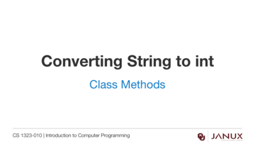
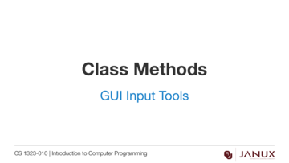

Class Methods
This section covers class methods.
Introduction to using static (class) methods in the Math class.
Java code developed in the videos from this lesson.
Lecture presentation
Lecture presentation

